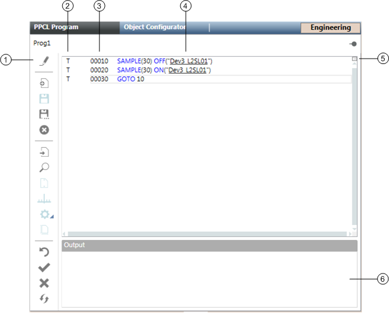
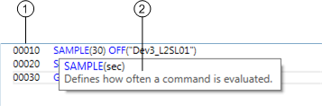
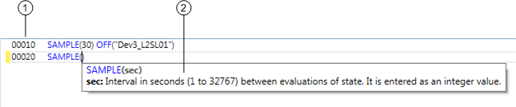
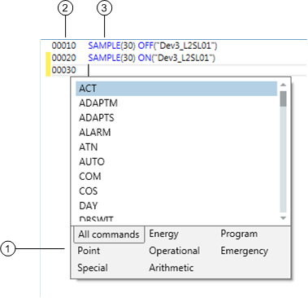
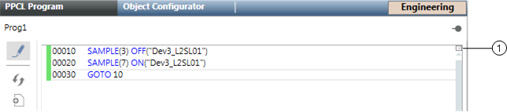

PPCL Editor Workspace
Select a topic to continue:
PPCL Program Pane

Item | Description |
1 | PPCL Editor Toolbar Includes the following controls: Edit Program: Allows you to modify existing commands and statements in the program. When you modify lines of code, a yellow bar displays in the margin to the left of the program line number. Once you successfully save the program, a green bar displays in the margin. New Program: Opens a new program. When saved, the program resides in a field panel on the network. Save Program: Compiles and saves the program. The PPCL Program must be in Edit Mode to use this feature. Save Program As: Allows you to save the program in another name. The program can be saved in the current panel or to another panel. Delete Program: Deletes the program from the field panel. Go To Program Statement: Allows you to go to the specified line of code in the program. Search Text: Allows you to search text when not in Edit Mode, or search and replace text while in Edit Mode. You can choose to search selected statements or all statements in the program. Quick Numbering: Automatically increments the line number when you are at the end of one line of code and press ENTER. The PPCL Program must be in Edit Mode to use this feature. Adjust Program Statement Number: Allows you to revise statement numbers for a single line or for the entire program. The PPCL Program must be in Edit Mode to use this feature. Compile Program: Compiles one or more lines of code in the program and displays success and failure messages in the Output Section of the workspace. The PPCL Program must be in Edit Mode to use this feature. Command Assist: Helps you enter PPCL commands into your program. The PPCL Program must be in Edit Mode to use this feature. Clear Program Trace Bits: Clears trace bits and unresolved lines of code in the program when not in Edit Program mode. Trace bits display in the Status column as a T. Unresolved lines of code display in the Status column as a red U. Enable Program Statements: Enables disabled statements. Disable Program Statements: Disables statements. Used for troubleshooting purposes. Disabled lines of code appear gray. Refresh Program: Connects to the field panel and reads program statements and their status. In other words, after clicking Refresh, the data in the field panel and the data displayed in the PPCL Editor are synchronized. |
2 | Status Column: Displays T for trace bits and a red U for unresolved lines of code. The Status Column only displays when the PPCL Program is not in Edit Program mode. |
3 | Program Workspace: Where programs display, and where commands and statements are created and modified. Disabled lines of code display in gray, executed lines of code display in black, syntax displays in blue, and comments display in green. |
4 | Underlined Point Name: Indicates a point that can be clicked for further information. Single-clicking the point name sends point property information to the Contextual pane (Operations, Extended Operations, Related Items, and Extended Items tabs). Double-clicking the point name makes it the new primary selection. |
5 | Horizontal Splitter: Allows you to divide a PPCL Program into two sections. This is useful for viewing, modifying, analyzing, or troubleshooting long programs whose entire code you cannot view in the limited space of one window or section. |
6 | Output Section: Displays success and failure messages when you compile the program. If the compiler finds an error, an error message is displayed, and the program changes are not saved. To locate the error in the program code, double-click on the error. The cursor moves to the start of the program line where the error occurred. You can then make any necessary changes to correct the error. |
Command Assist
The PPCL Editor command assist feature helps you enter PPCL commands and parameters into your program. The assist feature consists of three parts:
- Command Quick Information (tool tips showing definitions and descriptions)
- Command Attribute Editor (to help with statement syntax)
- Command List (which can be filtered)
To use the assist feature, see Using Command Assist.
Command Quick Information

Item | Description |
1 | Program line number. |
2 | Tool tip showing command definition and description. |
Command Attribute Editor

Item | Description |
1 | Program line number. |
2 | Command syntax. |
Command List

Item | Description |
1 | Filter categories for commands |
2 | Program line number. |
3 | Formatted statement. |
Available Commands
Program Control Commands
ACT
DEACT
ENABLE
DISABL
EPHONE
DPHONE
GOSUB
GOTO
ONPWRT
SAMPLE
IF THEN ELSE
Point Control Commands
ON
OFF
FAST
SLOW
AUTO
SET
INITTO
WAIT
STATE
Operational Control Commands
ENALM
DISALM
ALARM
NORMAL
LLIMIT
HLIMIT
Emergency Control Commands
EMON
EMOFF
EMFAST
EMSLOW
EMAUTO
EMSET
RELEAS
Energy Management Commands
DAY
NIGHT
DC
DCR
TOD
TODMOD
TODSET
HOLIDA
SSTO
SSTOCO
PDL
PDLDAT
PDLMTR
PDLSET
PDLDPG
LOOP
ADAPTM
ADAPTS
Special Function Commands
MIN
MAX
DBSWIT
TABLE
TIMAVG
OIP
DEFINE
LOCAL
LSQ2
LSQDAT
Arithmetic Function Commands
ATN
COM
COS
EXP
LOG
ROOT
SIN
SQRT
TAN
Horizontal Splitter

Item | Description |
1 | Horizontal Splitter To split the screen, move your cursor over the Horizontal Splitter box until you see the double-headed arrow, and then drag the splitter to create two sections. Using this method allows you to split the screen in whatever proportion you choose. Alternatively, move your cursor over the Horizontal Splitter box until you seed the double-headed arrow, and then double-click the box. This method automatically splits the screen into two equal sections, which you can then adjust manually to suit your preferences. To return the split screen to an unsplit screen, simply double-click the splitter or drag it back to its original location. |
Keyboard Shortcuts
Shortcut | Description |
CTRL + C | Copy the selected text and put it on the Clipboard |
CTRL + G | Open the Go To Program Statement dialog box, where you can enter a line number and click OK. Places the cursor at the beginning of the specified program line |
CTRL + V | Insert a copy of the Clipboard contents at the insertion point. |
CTRL + X | Remove the selected text and put it on the Clipboard |
CTRL + Y | Redo an action |
CTRL + Z | Undo an action |
CTRL + Mouse Wheel | Zoom in and out |
DELETE | Remove selected text |
Right Mouse Button
The right mouse button provides access to limited commands when The PPCL Editor is in Edit Mode. Placing the cursor anywhere inside the program window and clicking the right mouse button displays a popup menu with the following commands:
- Undo
- Redo
- Cut
- Copy
- Paste
- Delete
- Select All
- Enable Selected Statement(s)
- Disable Selected Statement(s)
- Clear Selected Trace Bits